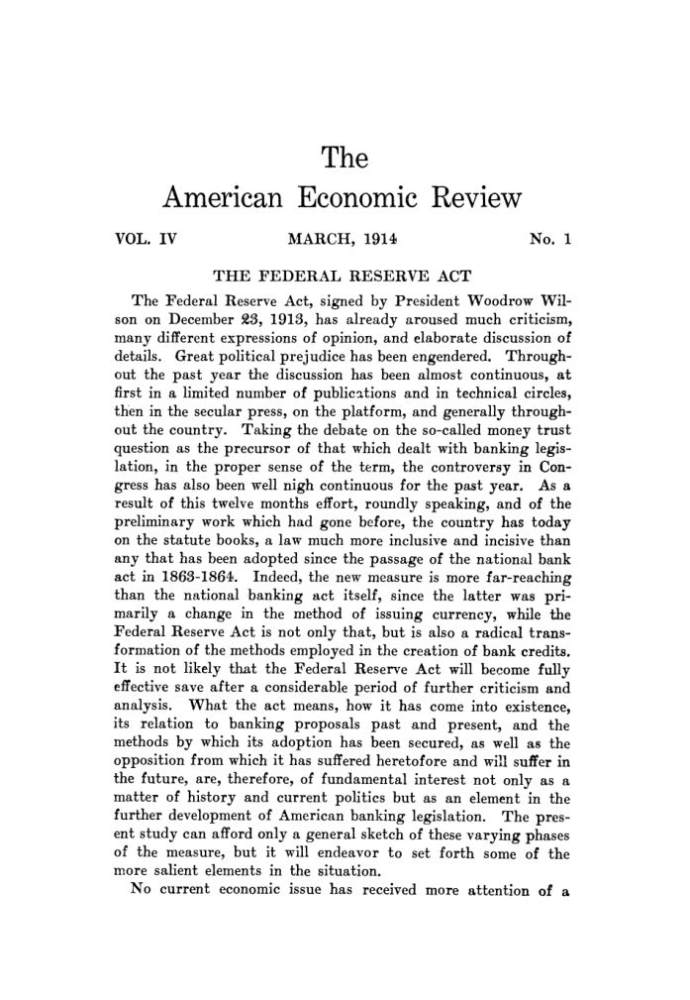

Willis, 1914: como nasceu a lei do Federal Reserve?
Leitura: 8 min
Três meses depois da sanção, Willis conta como a lei do Federal Reserve passou pelo Congresso, o que tomou do projeto Aldrich e por que, a seu ver, ela muda a função dos bancos americanos.


A lei do Federal Reserve foi assinada pelo presidente Woodrow Wilson em 23 de dezembro de 1913. Quando Henry Parker Willis escreve, a comissão encarregada de dividir o país em distritos bancários ainda está trabalhando, e nenhum banco de reserva existe. O artigo é, portanto, um retrato da lei no papel: de onde veio, o que mudou em cada etapa e o que se espera dela.
Willis abre com uma comparação. A nova lei é mais abrangente que a dos bancos nacionais de 1863–1864, porque aquela mudou sobretudo a forma de emitir moeda, enquanto esta muda também o modo de criar crédito bancário. E registra o custo do debate: nos três anos anteriores, calcula, cerca de US$ 1 milhão foi gasto em investigações oficiais, campanhas e convenções para obter uma reforma.
Como o projeto passou pelo Congresso?
O texto foi preparado entre abril de 1912 e junho de 1913, primeiro por um subcomitê da Comissão de Bancos e Moeda da Câmara presidido por Carter Glass, da Virgínia, e depois sob a direção do próprio Glass. Houve audiências públicas no inverno de 1912–1913 e investigações privadas. O presidente aprovou o projeto antes de sua apresentação, em 18 de junho de 1913.
A comissão da Câmara discutiu o texto de julho a setembro. Depois de cerca de duas semanas de bancada democrata a portas fechadas, o relatório foi apresentado em 9 de setembro, e a Câmara aprovou o projeto em 18 de setembro. No Senado, as audiências foram até 25 de outubro; seguiram-se um mês de comissão, três dias de bancada e o relatório de 1º de dezembro. A votação final veio em 19 de dezembro, a conferência terminou em 22 de dezembro, e a sanção ocorreu no dia seguinte.
Willis registra uma ruptura no meio do caminho. Na comissão do Senado, três senadores democratas contrários à proposta impediram um parecer rápido; um deles se juntou à oposição. A comissão dividiu-se em duas metades iguais, e cada uma apresentou um projeto. O da oposição previa apenas quatro bancos de reserva. A versão oficial venceu por dois votos.
O que mudou entre a Câmara e o Senado?
O plano da Câmara previa ao menos 12 bancos de reserva, com ações subscritas pelos bancos nacionais e estaduais, que fariam negócios apenas com os bancos membros e com o governo. Um Federal Reserve Board supervisionaria o conjunto. As novas notas seriam obrigações dos Estados Unidos, pagas por meio dos bancos de reserva, garantidas por papel comercial e por reserva de ouro de 33 1/3%.
O Senado manteve a estrutura, mas alterou detalhes: de 8 a 12 bancos, venda de ações ao público se os bancos não as subscrevessem, depósito de fundos públicos a critério do secretário do Tesouro, reserva de 35% a 40% nos bancos de reserva e reservas menores para os bancos membros, de 18%, 15% e 12% conforme a cidade. Acrescentou ainda uma garantia de depósitos financiada pelos lucros dos bancos de reserva.
O balanço de Willis é que a Câmara prevaleceu em quase todos os pontos de teoria. As exceções foram o limite de 12 bancos e o caráter facultativo dos depósitos públicos, ambas permissivas e não obrigatórias. O tratamento dos títulos federais de 2%, que lastreavam as notas dos bancos nacionais, seguiu um plano do Tesouro aceito pelas duas casas.
A lei copia o projeto Aldrich?
Muitos críticos diziam que sim. Willis responde distinguindo teoria e técnica. Na teoria, o projeto Aldrich criava uma única associação de reserva central, com pouca supervisão pública, controle praticamente entregue aos bancos e peso maior dos grandes acionistas. A nova lei cria 12 bancos, controle local, supervisão estrita do governo e transferência de reservas, e reduz a influência dos grandes bancos nas diretorias.
Na técnica, a semelhança é real. Emissão de ações, tipos de papel admitidos ao redesconto e outros detalhes seguem o projeto Aldrich. Segundo Willis, a Câmara conservou essa redação por estratégia: como os banqueiros haviam apoiado o projeto Aldrich, ficavam em contradição ao atacar os mesmos dispositivos na nova lei. Duas inovações importantes não estavam no projeto Aldrich: a transferência de reservas para os novos bancos e a cobrança de cheques ao par sempre que possível.
Willis chama a nova lei de “medida do homem de negócios”. (“business man's measure”)
Para que serviria o novo sistema?
Willis resume a lei em três traços: um mercado geral de desconto para o papel comercial, a reunião sistemática das reservas dos bancos e uma moeda elástica. O diagnóstico por trás deles é que o sistema anterior servia à especulação. As taxas que governavam a saída de ouro eram as dos empréstimos à vista no mercado de ações; os fundos líquidos dos bancos ficavam em empréstimos contra ações; e, nas crises, os bancos encurtavam o crédito, em vez de ampliá-lo como no exterior.
Com a nova lei, diz, o comerciante de crédito estabelecido poderia vender seu papel em todo o distrito de reserva, as taxas variariam menos entre regiões e estações, e o crédito ficaria mais barato e mais estável. A cobrança de cheques também mudaria: bancos do interior haviam testemunhado que metade de seus ganhos vinha dessas tarifas, mantidas por acordos entre eles; a lei põe as tarifas sob controle federal.
Há ainda a economia de ouro. A lei final reduziu muito as exigências de reserva, o que, admite Willis, cria risco de inflação na transição. Depois dela, os Estados Unidos deixariam de manter reservas de ouro maiores que as de qualquer outro país em relação ao volume de negócios. Os bancos de reserva poderiam usar a taxa de redesconto para conter a exportação de ouro ou atrair importações. Bancos de capital moderado poderiam abrir agências no exterior, para atender o comércio exterior americano.
Que defeitos Willis reconhece?
Willis aponta três heranças do debate anterior que considera indesejáveis. As notas do Federal Reserve são concebidas como moeda do governo emprestada aos bancos, à maneira dos antigos projetos de moeda governamental. A seção 18, sobre a retirada dos títulos federais, preserva a ideia de manter a moeda lastreada em títulos perto do nível atual. E a seção 21 insere uma autorização implícita para que comissões do Congresso examinem bancos, poder que fora recusado em 1912. Na avaliação dele, nenhum desses pontos tem efeito prático sério.
Para Willis, é uma lei “não restritiva nem paralisante, mas construtiva”. (“not a restrictive or hampering but a constructive measure”)
O êxito, conclui, depende também do empresário, que terá de ajustar seus hábitos de crédito à prática europeia, pagar seus títulos no prazo, sem renovações longas, e participar da direção dos novos bancos, onde a lei lhe reservou lugares. Os efeitos técnicos sobre o papel comercial, a distribuição das reservas e a concorrência entre bancos ficam para quando houver experiência com a lei em funcionamento.
Na minha leitura
Na minha leitura, o artigo vale menos como análise do que como registro de como um banco central foi desenhado. Willis mostra que a escolha entre centralização e controle regional foi política antes de ser técnica, e que a técnica foi tomada emprestada justamente do projeto rival. A separação entre o plano geral e a mecânica operacional é uma boa chave para ler qualquer reforma monetária.
O diagnóstico também merece atenção. Para Willis, o defeito do sistema antigo não era a falta de moeda, mas a ligação do crédito bancário com o mercado de ações e a rigidez das reservas nas crises. A resposta foi criar um mercado de desconto para o papel comercial e um emprestador de última instância. O papel que esse emprestador acabaria tendo depende de decisões que o texto da lei ainda deixava em aberto.
Glossário
- Federal Reserve Board
- órgão federal criado pela lei de 1913 para supervisionar os bancos de reserva.
- Banco de reserva
- banco regional, de propriedade dos bancos membros, que redesconta seus títulos e guarda suas reservas.
- Redesconto
- compra, pelo banco de reserva, de títulos já descontados por um banco membro.
- Moeda elástica
- moeda cuja quantidade se ajusta à demanda do comércio, em vez de depender do estoque de títulos públicos.
- Projeto Aldrich
- proposta da National Monetary Commission que previa uma única associação de reserva central.
- Cobrança ao par
- liquidação de cheques pelo valor de face, sem tarifa de cobrança entre bancos.
- Empréstimo à vista
- empréstimo resgatável a qualquer momento, garantido por ações, comum no mercado de Nova York.
Fontes
- The Federal Reserve Act — Henry Parker Willis (pp. 1–24). JSTOR · Internet Archive (PDF)
- Edição completa, com os demais artigos: Nº 128 do Arquivo.
Documento em domínio público (EUA, publicado antes de 1931), via JSTOR Early Journal Content e Internet Archive. Resumo e comentário do autor deste site, sem afiliação com a American Economic Association. Encontrou um erro? Escreva: a correção é publicada no próprio texto, com data.
↑ Nº 128 · Março de 1914: o Federal Reserve, o imposto de renda e os juros Blakey, 1914: como nasceu o imposto de renda federal americano? →